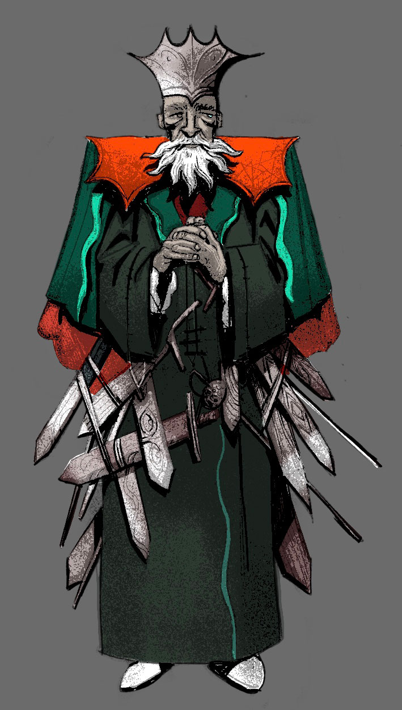

The personification of the city of Fortitude.
Cold, harsh and literally gray.
Joant is the oldest child, descended from a long line of kings
of varying amounts of coldness and harshness.
Fortitude is meant to be a rock, a solid foundation,
and maybe it still appears to be, seen from the ground up.
Its in the name of course, ingrained in the image.
King Malt started going to bed with a knife clutched to his chest many years ago.
It would never leave his side. As tensions within him grew, so did the need to feel he was the one in control.
He was the hand on the blade. He would be able to defend himself, should the need arise.
Now you can hear the King long before you see him.
The clinking and scraping of a multitude of swords grinding against the stone floors,
slowing his pace, but rarely his anxious heartrate.

Heihei, dette er et prosjekt i arbeid, som ikke er optimalisert for mindre skjermer. Snu telefonen din eller åpne siden på en større skjerm :)